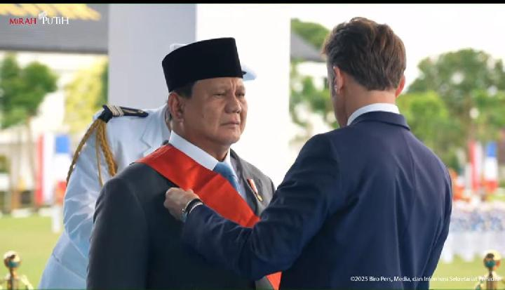

Prabowo Menerima Tanda Jasa Kehormatan Tertinggi dari Pemerintah Prancis
10 Mei 2025
Presiden Republik Indonesia, Prabowo Subianto, menggelar jamuan santap malam kenegaraan sebagai bentuk penghormatan atas kunjungan kenegaraan Presiden Republik Prancis, Emmanuel Macron, dan Ibu Negara Brigitte Macron di Istana Negara, Jakarta, Rabu malam, 28 Mei 2025. Acara yang dikemas secara meriah dan sarat budaya ini menjadi simbol keakraban hubungan dua negara yang semakin erat.
"Penganugerahan Tanda Jasa dari Pemerintah Republik Prancis, penghargaan kehormatan tertinggi Grand Cross of the Legion of Honour," kata pembawa acara di penyambutan tersebut.
Diketahui, Grand Cross of the Legion of Honour merupakan penghargaan tertinggi yang ada di negara Prancis bagi sosok militer atau sipil yang memberikan kontribusi penting bagi negara.
Kedatangan Presiden Macron disambut Menteri Pertahanan Sjafrie Sjamsoeddin, Panglima TNI Jenderal Agus Subiyanto, hingga Kapolri Jenderal Listyo Sigit Prabowo. Prabowo dan Presiden Macron terlebih dahulu memasuki sebuah gedung stadion. Setelah itu, Prabowo dan Presiden Macron hendak menuju Graha Utama Akmil.
Prabowo tampak menyopiri Presiden Macron dengan mobil Maung bewarna hitam. Prabowo duduk di kursi pengemudi sebelah kanan, sedangkan Presiden Macron duduk di kursi penumpang sebelah kiri. Di kursi belakang, duduk Sekretaris Kabinet Teddy Indra Wijaya dan delegasi Prancis.
Sepanjang perjalanan, Presiden Macron disambut pelajar dan SMP yang berdiri di tepi jalan sambil mengibarkan bendera Indonesia-Prancis. Setibanya di Graha Akmil, Presiden Macro melihat beberapa lukisan pahlawan Indonesia yang terpajang di gedung tersebut. Kedua pemimpin negara mengikuti upacara penyambutan.